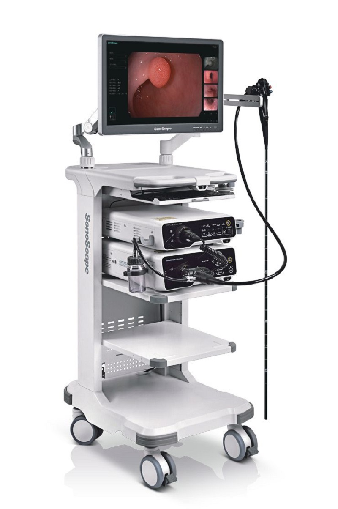

|

|
Видеоэндоскопическая система SonoScape HD-550 класса FULL HD применяется для обследования и эффективного лечения пациентов. Использование такого оборудования помогает получить изображение с камеры, введенной в организм пациента. Картинка четкая и понятная, может быть записана на носитель для дальнейшего использования.
Видеопроцессор HD-550
• Автоматический баланс белого
• Подчеркивание границ изображения (увеличивает резкость изображения, делает его более детализированным)
• Автоматическая и ручная настройки яркости, цветности изображения
• Цифровое увеличение изображения
• Режим улучшения визуализации сосудов CHb - инновационный и перспективный режим, основанный на принципе усиления длины волны, отражаемой клетками крови, визуализация красных кровянных телец (эритроциты). Незаменим при диагностике воспалительных заболеваний и атрофических изменениях слизистой оболочки.
• Режим NBI виртуальной хромоэндоскопии (WL/EWL / VIST/SFI - четырехэтапная технология). Экспертный режим визуализации сосудов и структур поверхности слизистой. Сочетает технологию оптического и электронного улучшения изображения, получаемого при узкополосном освещении. Помогает выявлять онкологические новообразования на ранних стадиях с высоким уровнем достоверности.
• Режим стоп-кадра
Интегрированная цифровая рабочая станция:
• Централизованная система (отсутствие необходимости в дополнительном компьютере)
• Встроенный жесткий диск не менее 500 ГБ
• USB порты для подключения внешних накопителей и принтеров не менее 5 (пяти)
• Сохранение информации не менее 10000 пациентов
• Клавиатура для ввода данных, обработки полученной информации
• Подготовка и распечатка результатов исследований на месте
• Ввод и сохранение данных о пациентах
• Сохранение изображений/видео с выводом на экран под основным изображением в режиме предпросмотра
• Программирование кнопок на рукоятке эндоскопа
• Сохранение до 10 комбинаций настроек исследования для использования в различных областях и условиях различными специалистами
Источник света VLS-55Q
• Два специальных режима освещения
• 2 LED лампы
• Индикатор отработанного времени на лицевой панели осветителя
• Уровень интенсивности света 1 - 19
• Непрерывный срок службы лампы составляет не менее 10 000 часов
Монитор 26” (Full HD)
• Медицинский монитор высокой чёткости, адаптирован специально для системы HD-550 (Full HD)
Возможные для подключения видеоэндоскопы:
• Видеогастроскоп EG-550
• Видеоколоноскоп EC-550T
• Видеогастроскоп EG-500
• Видеоколоноскоп EC-500T
• Видеобронхоскоп EB-500
Дополнительные принадлежности для HD-550 Full HD
Ножной переключатель для управления функцией стоп-кадра
|